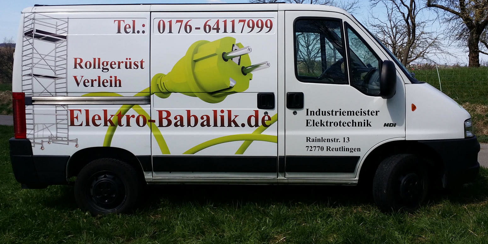
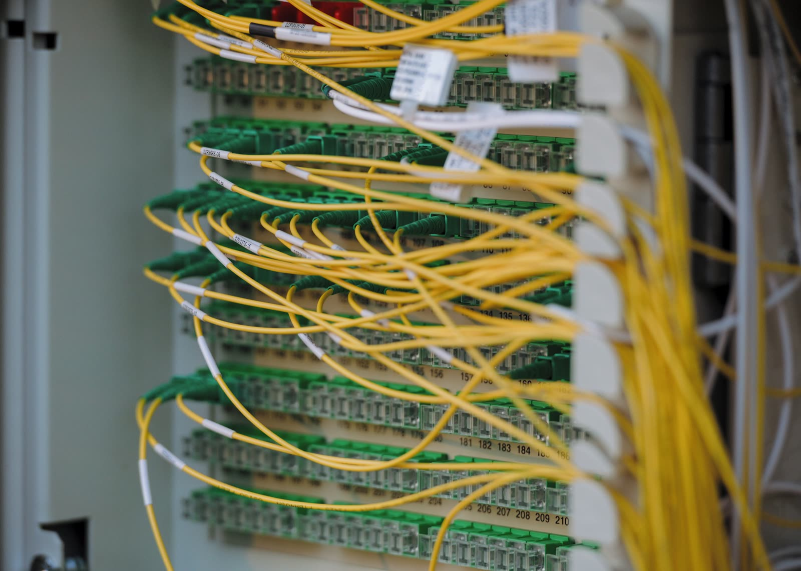

Über mich
Kurz in Zahlen
35Jahre in der Elektrotechnik
2Rollgerüste zum Ausleihen
1Ansprechpartner: ich selbst

Mein Weg
1991
Ausbildung bei der Telekom
Telekommunikationselektroniker, 1994 dann Betriebstechniker. Daher kommt mein Wissen über Telefon, Antenne und Netzwerk.
2007
Meisterprüfung
Industriemeister Elektrotechnik und Ausbilder.
2014
Elektro Babalik
Eingetragen bei der Handwerkskammer Reutlingen und selbstständig als Elektrotechniker unterwegs.
2015
Eingetragen bei FairNetz
Sachkundiger für den Anschluss an das Niederspannungsnetz bis 1000 V, mit Eintrag im Installateurverzeichnis.
Heute
Ihr Elektriker in Reutlingen
Installation, Reparatur, Netzwerk, Telefon und Antenne. Dazu zwei Rollgerüste zum Ausleihen.
Der Meister
Erhan Babalik
„Ich bin gebürtiger Reutlinger. Wenn Sie mich anrufen, komme ich selbst. Und ich sage Ihnen ehrlich, was nötig ist.“
Schnell
Kurze Wege in Reutlingen und Umgebung.
Zuverlässig
Was ausgemacht ist, gilt. Termin und Preis.
Persönlich
Sie sprechen immer direkt mit mir.

Steht etwas an? Rufen Sie mich einfach an.
Steckdose, Lampe, Netzwerk oder ganze Installation: Sie sprechen direkt mit mir, dem Meister.